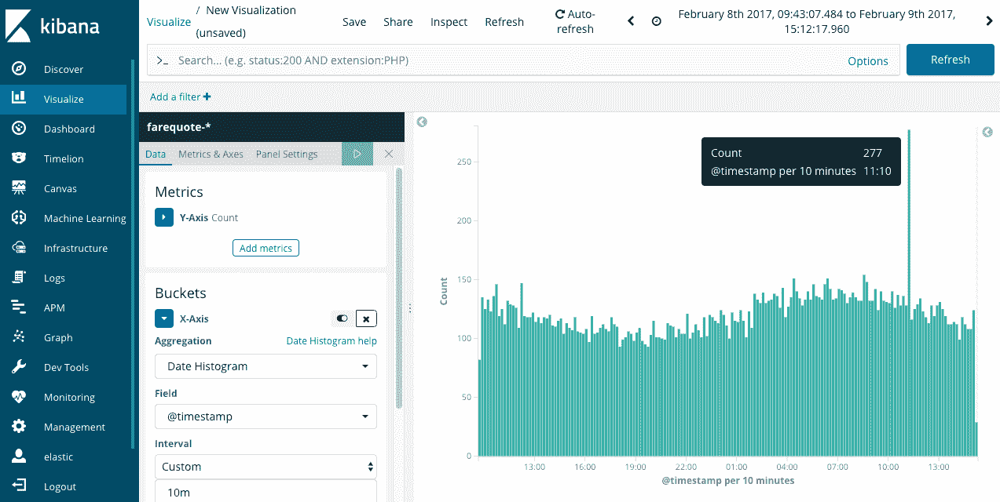

如前一章所示，第2章，用机器学习安装弹性堆栈，随着时间的推移跟踪指标及其潜在异常无疑是异常检测对IT数据的一个极其重要的应用。这提供了对许多关键性能和可用性指标的广泛、主动的覆盖。
然而，有许多重要的用例围绕着事件变化检测的思想。其中包括以下内容:
在这一章中，我们将讨论根据事物的发生率来确定异常的概念，并且我们将通过几个实际的例子，如下所示:
假设您正在通过查看特定的日志文件来解决问题。您会在日志中看到类似如下的一行:
18/05/2017 15:16:00 DB Not Updated [Master] Table
除非您非常了解创建该日志的应用程序的内部工作原理，否则您可能不知道该消息是否重要。让数据库成为Not Updated听起来可能是一种负面的情况。但是，如果您知道应用程序每天每小时都要写几百次这条消息，那么您自然会意识到这条消息是良性的，应该可以忽略，因为很明显，尽管这条消息被写入日志文件，应用程序每天都工作得很好。
显然，这是一个人类解释的问题。检查消息的文本和阅读否定短语(Not Updated)可能会使人倾向于认为该消息是值得注意的，因为可能存在问题。但是，消息的频率(它经常发生)应该告诉人们，尽管这些消息被写入日志，但是该消息一定没有那么重要，因为应用程序正在工作(也就是说，没有报告中断)。
对于一个日志文件中的几种类型的消息，人们可能很难处理这些信息(评估消息内容/相关性以及随时间变化的频率)。想象一下，如果有成千上万种不同的消息类型以每天数百万行日志的总速率出现。即使是应用程序内容和搜索/可视化方面最有经验的专家也会发现这是不切实际的，如果不是不可能的话。
ML提供了允许对消息内容的独特性和相对发生频率进行经验评估的能力。让我们首先通过对计数函数的介绍来关注事物的频率方面。
如在第2章、使用机器学习安装弹性堆栈中所见，弹性ML作业包含应用于数据某些方面(例如，字段)的函数组合的检测器。第2章、使用机器学习安装弹性堆栈、中显示的示例作业具有使用基于度量的函数的检测器，这些函数对基于度量的字段进行操作(如CPU利用率)。然而，我们将在这一章中探索的检测器将是那些简单地计数随时间发生的事情的检测器。
需要熟悉的三个主要功能如下:
你会看到ML中有各种各样的单边函数(只检测某个方向的异常)。此外，重要的是要知道这个函数不是对一个字段计数，甚至不是对文档中字段的存在计数，它只是对文档计数。
为了更直观地了解Count函数的功能，让我们来看看标准(非ML) Kibana可视化为我们展示了一个特定数据集，该数据集在Y轴上显示计数聚合，在X轴上显示10分钟分辨率的日期直方图聚合:

从前面的截图中，我们可以观察到一些情况:
我们可以看到使用了Count聚合函数(尽管高计数也是合适的)，并且将Bucket span设置为与构建Kibana可视化时相同的值。运行作业后，会发现产生的异常情况:
当然，277个文档/事件的异常正是我们所希望发现的，因为这正是我们早先在垂直条可视化中手动分析数据时所看到的。
但是，请注意，如果用60m桶跨度而不是10m桶跨度分析相同的数据，会发生什么:
请注意，由于发生的速率峰值非常短，当事件计数在一个小时内聚集时，峰值看起来不再异常，因此ML甚至不认为它异常。这类似于第1章、IT机器学习中指出的情况，铲斗跨度的值对结果分析有直接影响。
如前所述，低计数和高计数的单侧功能在试图寻找仅一个方向的偏差时特别有用。也许你只想在你的电子商务网站上找到一点订单(因为订单激增是个好消息！)，或者您可能只想发现错误的峰值(因为错误的下降也是一件好事！).
记住，Count函数计算文档数，而不是字段数。如果您有一个表示某个事物的汇总计数的字段，那么将需要特殊处理，如下一节所述。
我们清楚地说明了计数函数只是记录单位时间内的文档数量。但是，如果您使用的数据实际上有一个已经包含汇总计数的字段值，该怎么办呢？例如，在下面的数据中，events_per_min字段表示前一分钟发生的某件事情(在本例中为在线购买)的汇总次数:
{
"metrictype": "kpi",
"@timestamp": "2016-02-12T23:11:09.000Z",
"events_per_min": 22,
"@version": "1",
"type": "it_ops_kpi",
"metricname": "online_purchases",
"metricvalue": "22",
"kpi_indicator": "online_purchases"
}
为了让ML作业认识到需要记录的是events_per_min字段(而不是文档本身)，我们需要设置summary_count_field_name指令(只能在高级作业的UI中设置):
将events_per_min指定为summary_count_field_name后，这种情况下适当的检测机配置只需使用low_count函数:

运行该作业的结果与我们预期的完全一致—检测到我的客户在线购买量低于应有水平的一些情况，包括订单完全降至零的时间，以及某个中午的部分订单丢失:
与前几章中所示的沿分类字段拆分和/或划分分析的方法类似，这可以通过计数函数来完成。这使得一次获得多个并发事件率分析变得非常方便，可以通过多指标作业或高级作业UI向导来完成。
这方面的一些常见用例如下:
为此，使用了相同的机制。例如，在多指标作业中，在使用计数(事件率)函数时，用户可以选择一个分类字段来分割数据:
这导致如下结果，其中确定被建模的许多实体中只有一个实际上是不寻常的(对AAL航空公司的请求量的峰值):
如您所见，在数据中某个分类字段的大量唯一实例中，很容易看到基于数量的变化。我们一眼就能看出哪些实体是不寻常的，哪些不是。
除了我们到目前为止已经描述过的函数，还有几个其他的计数函数支持更广泛的用例。
非零计数函数(non_zero_count、low_non_zero_count和high_non_zero_count)允许处理基于计数的分析，但也允许在数据稀疏的情况下进行精确建模，并且您不希望不存在的数据被显式地视为零，而是null。换句话说，时间数据集，如下所示:
4,3,0,0,2,0,5,3,2,0,2,0,0,1,0,4
使用non_zero_count功能的数据将被解释如下:
4,3,2,5,3,2,2,1,4
在预期不存在规则间隔的测量的情况下，将零视为零的行为可能是有用的。这方面的一些实例如下:
不同的计数函数(distinct_count、low_distinct_count和high_distinct_count)测量特定字段值的唯一性(基数)。该函数有许多可能的用途，特别是在群体分析(见下一页)的环境中使用时，可以发现记录了一组过度多样化的字段值的实体。一个典型的例子是寻找参与端口扫描的IP地址，访问远程机器上异常大量的不同目的端口号:
{
"function" : "high_distinct_count",
"field_name" : "dest_port",
"over_field_name": "src_ip"
}
请注意，src_ip字段被定义为over字段，从而调用群体分析并相互比较源IP的活动。接下来是关于群体分析的附加讨论。
根据一个实体自身的历史来计数事件的发生，执行异常检测显然是有用的。但是，正如我们在第1章、IT的机器学习、中概念性地介绍的那样，将某事物的行为与其同类进行比较的想法也是有益的，尤其是在我们评估某事物发生的次数的情况下。通过统计人群中事物的出现次数来发现个体异常值有多种重要的用例。其中一些使用案例包括:
揭露行为异常的一个实际例子是分析跟踪使用情况的日志，比如web访问日志。我们可以建立一个寻找不寻常的客户端IP地址的工作，这些客户端IP地址的行为像自动化的机器人，而不像人类(因为机器人通常比人类发出更高数量、频率和多样性的请求)。该配置将每单位时间内的web请求计数(按HTTP状态代码划分，因为僵尸工具通常也会随机访问，从而产生一组不同的响应代码)与客户端IP群体进行比较:
执行时，该作业可以很好地识别一些流氓IP地址:
热图显示了前10个最不常见的客户端IP地址，同样基于单位时间内的请求量。关注头号违规者173.203.78.60，当点击其泳道中的红色方块时，我们可以看到详细信息:
我们可以看到，这个流氓IP地址实际上正在执行数千个对/wp-login.php的URI的请求，幸运的是，这个请求在这个web服务器上并不存在(因此产生了状态代码404)。这似乎是一个相当简单的暴力登录尝试，但仍然是一个有趣的发现。
作为比较，如果web日志的分析利用了URL字段的distinct_count,而不是标准计数函数，那么前面的恶意IP地址就不会被突出显示为异常。这仅仅是因为成千上万的请求都是针对同一个网址(wp-login.php)。因此，请求的多样性非常低。然而，在寻找具有异常高的URL请求多样性的IP地址的工作中，使用distinct_count会发现不同的情况，例如这个IP:
这个IP ( 109.234.202.124)对唯一的URL发出了数百个请求(而人类不会在相同的时间内发出那么多不同的请求)。如果您使用Kibana的Discover面板来查看web日志中的原始请求，并针对该IP地址进行过滤，就会发现该IP正在尝试针对不同PHP页面的各种请求，每次都会在查询字符串中传递一个看起来很奇怪的参数:
这种流量似乎是由希望在网站的PHP代码中找到漏洞的机器人驱动的。它盲目地测试各种可能众所周知的PHP文件名，传递一个已建立的文本文件(总是托管在Google上)的内容可能会向bot表明该PHP页面存在漏洞。如果发现，很可能会对该PHP页面采取一些恶意的后续操作。
在时态信息流(如日志文件)的上下文中，统计上罕见的东西(出现频率低)的概念既直观又难以理解。例如，如果我被要求在一个日志文件中查找一条罕见的消息，我可能会试图将我看到的第一条新奇的消息标记为罕见消息。但是如果几乎所有的信息都是新奇的呢？都是稀有的吗？还是什么都不稀罕？
为了定义稀有性在一系列时间事件的背景下是有用的，我们需要同意宣布某样东西稀有必须考虑它存在的背景。如果有许多其他常规的东西和少量独特的东西，那么我们可以认为独特的东西是罕见的。如果有许多独特的东西，那么我们会认为没有什么是罕见的。
在ML作业中应用稀有函数时，需要声明稀有函数关注哪个字段。然后在“按字段名称”框中定义该字段。因此，例如，要查找引用罕见国家名称的日志条目，请按如下方式构建您的检测器:
这可以方便地找到意想不到的地理访问(在中，我们的管理员几乎每天都从纽约和伦敦办公室登录，但从来没有从莫斯科登录过！)。
当查看稀有性分析的结果时(例如主机上运行的稀有进程名称)，您会看到异常浏览器的外观略有不同。更多详情可以参考https://discuse . elastic . co/t/dec-4th-2018-en-ml-rarity-analysis-with-machine-learning/158979的链接。
如果您有基于消息但由机器生成的日志条目，那么在它们可用于异常检测之前，它们首先需要被组织成相似的消息类型。这个过程叫做分类，而弹性ML可以帮助这个过程。
在定义这里考虑的基于消息的日志行时，我们需要稍微严格一些。我们没有考虑的是完全自由形式的日志行/事件/文档，很可能是人类创造的结果(电子邮件、推文、评论等等)。这类信息在结构和内容上过于武断和多变。
相反，我们专注于机器生成的消息，这些消息显然是在应用程序遇到不同的情况或异常时发出的，因此将它们的构造和内容限制在一组相对离散的可能性中(要理解消息可能确实有一些可变的方面)。例如，让我们看看应用程序日志的以下几行:
18/05/2016 15:16:00 S ACME6 DB Not Updated [Master] Table 18/05/2016 15:16:00 S ACME6 REC Not INSERTED [DB TRAN] Table 18/05/2016 15:16:07 S ACME6 Using: 10.16.1.63!svc_prod#uid=demo;pwd=demo 18/05/2016 15:16:07 S ACME6 Opening Database = DRIVER={SQL Server};SERVER=10.16.1.63;network=dbmssocn;address=10.16.1.63,1433;DATABASE=svc_prod;uid=demo;pwd=demo;AnsiNPW=No 18/05/2016 15:16:29 S ACME6 DBMS ERROR : db=10.16.1.63!svc_prod#uid=demo;pwd=demo Err=-11 [Microsoft][ODBC SQL Server Driver][TCP/IP Sockets]General network error. Check your network documentation.
在这里，我们可以看到有各种各样的消息，每个消息都有不同的文本，但这里有一些结构。在日期/时间戳和发出消息的服务器名称(这里是ACME6)之后，是消息的实际内容，应用程序在这里通知外界当时发生了什么——是正在尝试什么还是发生了错误。
为了给日志文件中无序的消息流带来一些秩序，Elastic ML将使用一种技术，通过使用字符串相似性聚类算法将相似的消息分组在一起。该算法背后的启发大致如下:
举个简单的例子，考虑这三条消息:
Error writing file "foo" on host "acme6" Error writing file "bar" on host "acme5" Opening database on host "acme7"
该算法将前两条消息聚集在同一类别中，因为它们将被视为Error writing file on类型的消息，而第三条消息将被赋予其自己的(新)类别。
这些类别的命名很简单:ML称它们为mlcategory N，其中N是一个递增的整数。因此，在本例中，前两行将与mlcategory 1相关联，第三行将与mlcategory 2相关联。在真实的机器日志中，由于日志消息的多样性，可能会生成数千个(甚至数万个)类别，但是可能的类别集应该是有限的。但是，如果类别的数量开始达到几十万，那么很明显，日志消息不是一组受约束的可能消息类型，因此不适合进行这种类型的分析。
既然消息将被前面描述的算法分类，下一步就是计数。在这种情况下，我们不会计算日志行(以及Elasticsearch索引的文档)本身；相反，我们将计算算法输出的不同类别的出现率。因此，例如，给定上一节中的示例日志行，如果它们出现在相同的时段范围内，我们将得到分类算法的以下输出:
mlcategory 1: 2 mlcategory 2: 1
换句话说，在最后一个时段跨度间隔中，Error writing file on类型的消息出现了两次，而Opening database on host类型的消息出现了一次。如下一节所示，正是这些信息将最终被建模并在ML作业发现异常时被确定。
首先对基于消息的日志行进行分类，然后对其进行计数的两步过程是作为ML作业中的一个配置步骤来实现的。然而，ML作业配置需要有两个关键部分:
请注意，mlcategory字段不是正在分析的原始数据的实际文档的一部分；它类似于脚本字段，仅当分类字段名称被定义为作业配置的一部分时才存在。
让我们来看看以下步骤:
{
"@timestamp": "2016-02-08T15:21:06.000Z",
"message": "REC Not INSERTED [DB TRAN] Table",
}
{
"@timestamp": "2016-02-08T15:21:06.000Z",
"message": "Fail To Connect Database ReActivate Application / Check Connection String",
}
{
"@timestamp": "2016-02-08T15:21:06.000Z",
"message": "Opening Database = DRIVER={SQL Server};SERVER=127.0.0.1;network=dbmssocn;address=127.0.0.1 1433;DATABASE=svc_prod;;Trusted_Connection=Yes;AnsiNPW=No",
}
{
"@timestamp": "2016-02-08T15:21:23.000Z",
"message": "REC Not INSERTED [DB TRAN] Table",
}
{
"@timestamp": "2016-02-02T07:36:00.000Z",
"message": "012 Head Office Link Active 127.0.0.1",
}
{
"@timestamp": "2016-02-02T10:52:00.000Z",
"message": "Transaction Match In DB / Duplicate Transaction",
}
然后，在检测器配置中，我们可以使用mlcategory的by_field_name分割计数检测器:
在这里，我们看到ML作业已经确定了在此时间段内出现次数增加的几类消息。与数据库问题(无法连接数据库、DBMS错误等)相关的消息明显增多。
此外，请注意表中的“类别示例”列。在其中，ML将向您显示(默认情况下)最多四个匹配并被归入该类别的示例日志消息。在某些情况下，只有一个例子(因为随后的消息完全相同)，而如果有多个，那么就会有细微的差别(比如主机名或IP地址)。这些样本的存储是ML存储日志消息副本的唯一时间，该日志消息是作为ML作业执行的一部分而被分析的。在所有其他情况下，只存储关于数据的汇总信息。
关于控制分类如何工作以及如何查看分类结果的参数的更多信息可以在位于https://www . Elastic . co/guide/en/Elastic-stack-overview/current/ml-configuring-categories . html的Elastic网站的文档部分以及位于https://www . Elastic . co/guide/en/Elastic search/reference/current/ml-Get-category . html的 Get categories API 文档中找到。
尽管分类非常有用，但它也有其局限性。具体来说，在以下一些情况下，尝试使用分类可能会返回较差的结果:
我们已经看到，ML可以突出日志行中的数量变化、多样性和唯一性，包括那些首先需要分类的内容。这些技术有助于解决我们在本章第一部分中描述的挑战，在这一部分中，人们必须既认识到内容的唯一性，又认识到每个原始日志消息出现的相对频率。
本章中学习的技能将在下一章第4章、 IT运营分析和根本原因分析、中有所帮助，在下一章中，我们将使用ML来帮助找到跨多个数据集的复杂问题的根本原因，包括日志文件和性能指标。分析肯定会包括检测异常发生的日志事件。